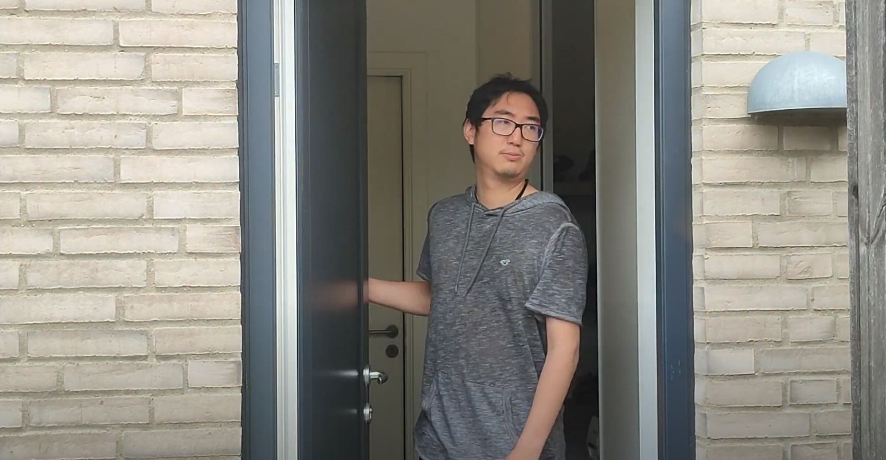

In this module we were taught the fundamentals of how to plan, shoot
and edit video footage. This is also where we had our first real-life
client collaboration for which we had to create a new or improved
online brand identity.
A story without words
Description
05.01.01 individual assignment
Plan, shoot, and edit a 1-minute video that tells a story without
using words, neither verbal nor written.
Process & Knowledge
This assignment served as an introduction to the fundamentals of
video editing. With the help of my flatmate, I planned and shot a
simple video in my home. The intent of the subject matter is a
familiar case that we have all experienced at some point or more
likely multiple times in our lives when we misplace something,
turning our house upside down in the pursuit of finding it, only to
find out it was right in front of us the entire time.
Solution

Video Content
Description
05.02.04 Group Assingment
This was our main task that need to be accomplished for this theme
and as a request from the client.
Process & Knowledge
The assignment started off with a client debrief in front of the
whole class in which we learned that the company (BeerWalks) owner
(Christoffer) wished to widen his brand awareness around his already
established concept and possibly expand into other concepts in the
future so that it may reach a broader target audience.
Treatment: Presenting the entire story of our intended video
idea in the present tense, making sure the theme of the idea is well
understood. Storyboard: We drew up panels relating to the
story and relevant information, such as camera movements and angles,
sounds and locations, dramaturgical elements, and narrative
curves.
All the footage used in the video ad was shot at one of the
Beerwalks after making sure we had the approval of everyone
attending, with further footage of ourselves going around the same
walk path as the walk itself usually takes.